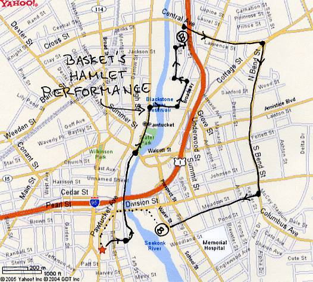

Oozing in The Bucket Hash
Run #988, March 14, 2005
Hare: Oozing SD
Location: East Ave. Cafe, P’tucket
Weather: High 30’s and clear
Present: Basket, SESYB, Bondo, Dr. WHO, Dry Foot Fairy, WIPOS, Ben, and Seamus.
Not Present: Async, Fuwangi, Areola (week #10)
The Run:
This run was so pathetic, that it hardly warrants words. So here’s a picture of it (just for historical record). Note the monotonously straight and long trail between the first and second beer checks that was confusing enough to get Basket lost.

Ah, being true to hash trash, here’s the narrative…
Dr. WHO showed up early at the parking lot of the East Ave. Café in scenic and historic Pawtucket. With no fellow wanker in sight, not even the hare (even though his car was there), the good doctor gone mad decided to go inside and promptly ordered a Guinness. Brilliant! Dry Foot Fairy arrived next and joined Dr. WHO for a pint of Guinness. Brilliant! After finishing their beers, the two went outside where Basket, Bondo, SESYB, and Oozing the hare stood waiting and perplexed as they did not have the presence of mind for a much needed pre-lube.
They were quickly off, heading east toward the Blackstone River, no, Pawtucket River, no, Seekonk River. And just as quickly Bondo and Ben headed north, ignoring the obvious marks. Nobody asked or cared what Bondo could be thinking. A short two blocks downhill, a check on Taft St. was reached. Marks were spotted heading north along the river bank in what amounted to be 20 feet of shiggy before returning to pavement. [20 feet of shiggy = 0.0038 miles, but I digress] Basket and Dr. WHO took the lead until reaching the boat launch for the Dragon Boat Race, where another check was found, obviously just to slow the hashers for a moment of reminiscence for an event which nobody could recall anything. Dry Foot having not attended the Dragon Boat Race wandered aimlessly and confused, until true trail was discovered, obviously straight and north under the I-95 bridge.
The pack soon arrived at Slater Mill and park on Roosevelt St, where a brief break for sight seeing became necessary (running did not seem to be a priority this evening). They continued their northward journey passing the Pawtucket Police Station. [Ah, the obvious reason why Bondo would have no part of this hash, as he would no doubt be detained for questioning and administered a full body and cavity search. Being subjected to a colonoscopy exam a few weeks later, and discovering that he enjoyed being anally violated, he missed this golden opportunity. But I digress, again.] Upon reaching the small outdoor theatre at Veteran’s Memorial Park on the corner of Roosevelt and Exchange streets, Basket immediately took to the stage and dove into a well-rehearsed performance of Hamlet. The others ignored Basket, and instead focused on the check on the corner. And for good reason, as Basket immediately skipped to the “Closet Scene” Act 3 Scene 4 (appropriate because it was dark out) where Basket (Hamlet) confronts a ghost who tries to prevent Basket (Hamlet) from enacting childhood sexual fantasies with his mother Gertrude. Poor Seamus did not know which part he would have to play.
Nobody witnessed the outcome of Basket’s performance, but all were quickly on trail heading east on Exchange St. lead by a much terrified Dry Foot Fairy. A perplexing “MJ” check was reached, throwing Dry Foot off in the wrong direction, while Dr. WHO found true trail heading north on Fountain St. From then on, it was decided to let the co-hare SESYB take the lead. Duh! The true hare caught up and started to make half-hearted attempts to keep everyone on trail as the pack weaved it’s way north and east through dark, ominous alleys arriving at Middle St. near Central St. where a “B” was discovered in front of Peddler’s Inn (est. 1976). Basket tied Seamus to a post outside and all headed in for a much needed beer.
Besides the female bartender and her permanent patron Daisy, the hashers were the only ones there. Bottles of Sam Adams were opened and quickly downed. It did not take long before everyone, including SESYB, started hitting on poor Daisy, the prettiest thing that would dare be in the presence of hashers. All was good until Bondo arrived. The bartender, obviously ignorant of hashing, allowed Ben and Seamus into the bar. All savored their beer, the bartender offered Ben and Seamus some water, and Basket began his typical Freudian slips and referred to Daisy as Gertrude. When he started to get violently protective of Daisy (Gertrude), particularly when Ben tried to pee on her leg (to mark Daisy as his), all decided it was a good time to leave. However, there was some hesitation as the bar offered $3 burgers, enticing some to ditch the run and just have the On-on-on here (just a pathetic excuse to spend more time with Daisy). But being true hashers, they were off, as Oozing unsuccessfully tried to sneak out without paying for the beer.
They reached a quick check at the corner of Middle and Central, with true trail heading east again and crossing over I-95. Much pavement pounding started taking it’s toll as the pack started to thin out with Dr. WHO and Dry Foot in the lead. Basket quickly faded back, and some wondered if he was going to go back to Peddler’s Inn and kidnap Gertrude (Daisy). A check was found on the corner of Central and Cottage streets. True trail was found by SESYB heading south on North Bend St. Marks started to alternate from telephone poles to the side walk to telephone poles again, confusing the hashers on what was otherwise uneventful and endless pavement. North Bend turned into South Bend, and the monotonously strait trail made some hallucinate, falsely seeing an oasis of beer. Finally, another check was reached on Division and South Bend. With McCoy Stadium close by, some wished the hare would offer the relief of some shiggy. Not. Dr. WHO, Dry Foot, and SESYB lumbered south for what seemed for miles and ended on Meadow St heading west (finally!). Meadow St. petered out onto Water St. where another “B” was discovered, to much relief.
The BC was over the birm of the road. All had to descend a 20 foot near-vertical hill, without breaking their necks, into woods littered with trash, broken beer bottles, and used condoms [providing another 30 feet of urban shiggy = 0.0057 miles] next to the river with a schizophrenic name problem and an abandoned lot. All were there, including the hare, except for Basket (Yippee!). Some half-hearted calls were made for Basket. Oozing finally re-climbed the hill to find him. To the others’ disappointment, Basket was found and joined the beer check. Apparently, Basket was looking for Bondo, who was at the BC, but everyone knew that he really wanted to spend time alone with Gertrude (Daisy). Between bottles of Bass and Newcastle Brown Ales, some singing, the odor of kitty litter overcame the hashers. The nasal stimulation of kitty litter made SESYB have to go pee in the woods. It was decided to circle there, and comments on the run didn’t seem to get much better than pathetic. However, there were two beer checks, loss of Basket, and meeting Daisy (Gertrude). Total rating: +0.69. Hashit: Basket for looking for Bondo, no Oozing for finding Basket. Like it matters.
After the circle, they made their way back to East Ave. Café by crossing the river over Division St. On the bridge, Dr. WHO discovered a relatively clean shirt with some odd yet unique words and markings. Dry Foot Fairy tried to warn WHO not to take the shirt, for sure it was gang attire and probably the shirt worn by a young Hispanic gangster being thrown off the bridge by his rivals. Dr. WHO didn’t heed to Dry Foot’s warning and took the shirt home anyway, probably to remind him of his youthful skin head days. Upon reaching the cars, WIPOS stood waiting. WIPOS admitted that he did run for a bit, after arriving late, but nobody saw any signs of sweat underneath all those protective layers of Kevlar and goose down. Fortunately for WIPOS he did not experience any of the mis-adventures the rest had to endure. All went into the café where Guinness was poured (Brilliant!) and bags of ice were ordered to relieve the sore knees and shin splints from the miles and miles of cold pavement pounding. Food was ordered, some songs, and another complete waste of an evening concluded.
On On
Dry Foot Fairy